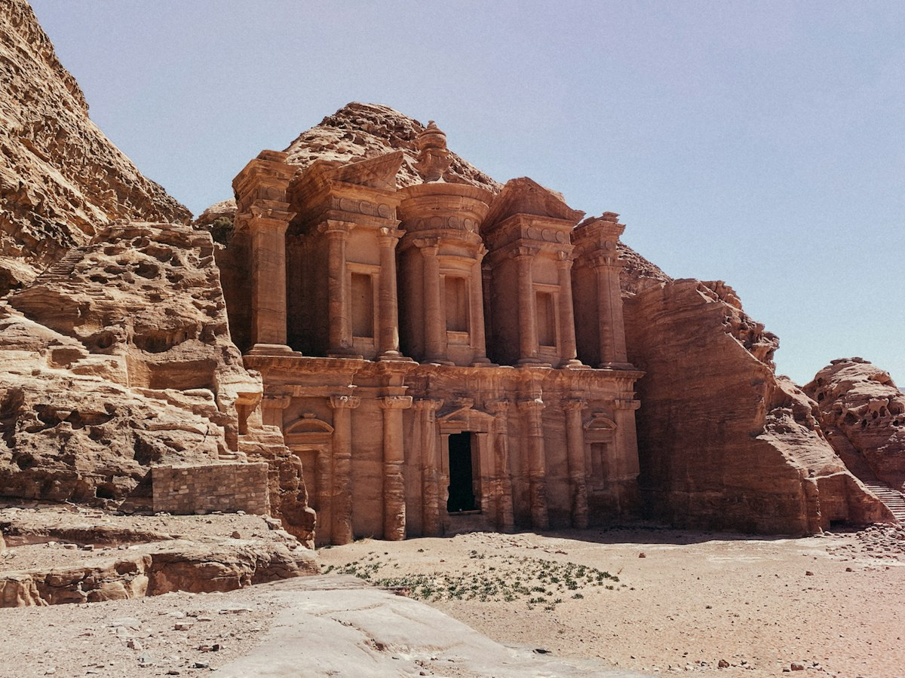

★ 4.8
★ 4.8Explore your way
Popular Jordanian Destinations

Featured destination
Petra
Enter through the Siq, meet local storytellers and spend a day among the monuments of the Nabataean capital.


A journey through the Kingdom
Jordan Is Closer Than You Think.

Ma'an, Jordan
Petra
Historical DestinationOut & About
Wild side of Jordan
Camp beneath desert stars, hike Ajloun's green trails and dive into Aqaba's reefs with trusted local guides.
Stay well. Eat local.
Stay & Dine

Hotel
The House Boutique Suites
Amman · ★ 4.8
From 84 JOD
Desert Camp
Memories Aicha Camp
Wadi Rum · ★ 4.8
From 110 JODResort
Ma'in Hot Springs
Dead Sea · ★ 4.8
From 145 JODJordanian Dining
Sufra Restaurant
Amman · ★ 4.8
From 22 JODSmart outing tools
One budget. Endless possibilities.
Build a weather-aware itinerary, invite friends and keep every cost in view.
Celebrate Jordan
Upcoming Events
Go With Me
Meet Your People

Verified local host
Omar Al-Khatib
Downtown Amman food walk · Arabic & English · ★ 4.9
“Ylla Tasha turned our one free afternoon into the best part of our Jordan trip.”— Lina, community member
Stories from Jordan